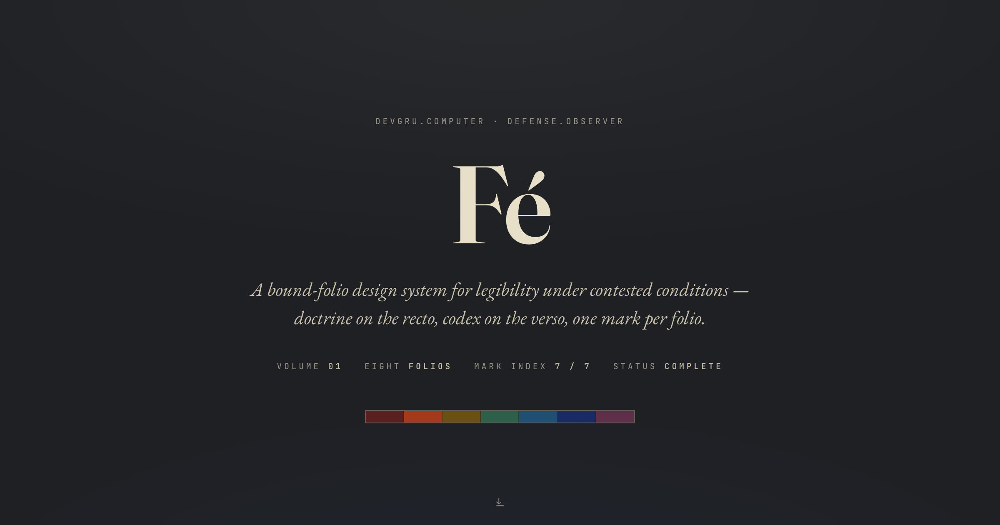

Recto · Doctrine
The argument — a named legibility problem in some domain.
Fé is a bound-folio design system for legibility under contested conditions. Eight folios, one fixed form, one mark per folio — a system whose discipline you can verify in a single glance.

Defense systems, brand systems, and any complex-systems discipline share one failure mode: they lose legibility exactly when the stakes are highest — under degraded communications, contested authority, and machine-tempo action faster than human review. The situation actively works to destroy your ability to read it.
The usual responses don't hold under that pressure. A logging system documents after the fact. A brand deck asserts values beside the work, in separate paperwork no one consults mid-operation. A specification describes intent but can't prove the artifact obeys it. Each treats legibility as something you add — a layer, a report, a review step — rather than a property of the thing itself.
The brief for Fé was to design the opposite: artifacts that show what they are doing while they do it, inspectable in flight, where the claim and the proof of the claim live in the same object.
The system takes a single position and builds everything from it: legibility — the ability to hold an accurate read of a situation while the situation tries to destroy that read — is the structural concept underneath every discipline that operates under pressure. Not transparency. Not documentation. The property of an artifact that lets you read it in the moment.
The second move is the one that makes it a system rather than an essay: the form itself enforces the argument. Each folio pairs a doctrine (the argument) with a codex (the worked artifact), bound by a single mark color used at exactly the one operational moment where argument and artifact agree. Because the form is fixed and the bind is visible, a reader holding any single folio can verify — in one glance — that the codex obeys the doctrine. Discipline becomes auditable at the artifact level.
“A logging system documents after the fact. A legible system shows in the moment, in the artifact itself.”The standing thesis
Each folio is a single wide spread, designed at a native 1440px. The discipline is not decorative — it is what makes the argument-to-artifact bind checkable without external reference.
Underneath the folios sits a locked Stage A foundation — four system-core values, a four-paper spectrum, and three typefaces (EB Garamond, JetBrains Mono, Fraunces, all SIL OFL). These never vary. The interesting governance is the Mark Color Index: seven slots, each holding one operational concept, not just a color.
The index has rules with teeth. A mark promotes exactly once and never migrates — claim a slot and it is closed. A new concept that fits no existing zone cannot just take a color; it requires a formal AUDIT to extend the index. Seven was chosen as a deliberate ceiling. The governance can tell a new request no — which is the point. A discipline that accommodates everything disciplines nothing.
Volume 01 is eight folios with a deliberate arc. №00 CANON × FORM is the self-documenting foundation — the only folio with no single mark, because it catalogues all of them. The Norse trio (№01–03) reads stanzas of the Old Norwegian rune poem as structural predictions: wealth as the engine of kin-strife, substance verification before engagement, strategic estimation under capability overhang.
The contemporary quartet (№04–07) is the payload — a sovereignty-and-accountability map for autonomous systems that brackets a single bound action across four dimensions:
Together: a system whose action, authority, origin, and identity are all legible in the artifact. The argument is also the thesis of the wider practice — that this is an old shape (the writ, the deed, the commission, the seal) recovered for contemporary work.
The system did not arrive intact. The most consequential decisions came from things going wrong and being unwound on the record — which is the case study's real subject, because a governance model is only as good as the moment it stops you.
AUDIT-001 is the case study in miniature: the system's value isn't that it produces folios, it's that it can refuse an invalid one and document why. The duplicate-slot incident is preserved in the record, not erased — the same way the codices preserve their own provenance. The discipline practices what it argues.
A design system that only its author can extend isn't a system — it's a style. So Fé is packaged as an installable skill: the canonical rules, the locked foundation values, the Mark Color Index discipline, blank scaffolds, eight worked examples, and the binding pipeline. “Build a Fé on [topic]” becomes a one-prompt invocation that honors the same constraints — including the survey-first Step 0 that AUDIT-001 produced.
The skill carries its own scar tissue and changelog. It ages forward with the system: when the index closed and the colophon was added, the package was versioned to match. The governance travels with the artifact.
Every folio is plain HTML — no build step, no framework, no asset beyond the type. The catalogue is assembled by a pipeline that renders each spread at its native dimensions and concatenates to a single PDF. Getting that to render faithfully took fighting the headless print engine, and both fixes are documented in the tool so they can't recur:
@page, not the PDF width/height params. Those params paginate a spread across two pages when content sits near the page boundary; an injected @page size sets the box the layout engine actually uses.min-height:100vh before measuring. Harmless on screen, but at print time 1vh equals the tall page height — re-inflating the body onto a phantom second page.The portfolio is portrait by design and never forced into landscape: downscaling a 1440px spread destroys body-text legibility — which would be a system that violates its own thesis.
Volume 01 ships as a self-consistent set: eight folios, a 10-page bound volume with alternate cuts (a hue-ordered spectrum edition, plus Norse and contemporary subsets), an installable skill, and a deployed landing. Every artifact — folios, PDF, cover, colophon, documentation, skill, and this case study — names the system the same way and obeys the same rules.
Sovereignty has always operated through named, attested, legible artifacts — the writ, the deed, the commission, the seal. What modernity stripped wasn't the underlying logic but the operational legibility. Fé's wager is that the older shape is the structural answer, and that a contemporary system can recover it without nostalgia.
The hardest decision was to stop. A discipline that cannot end is no discipline, so the index closes at seven by intent and the volume is declared complete with a colophon rather than left quietly full. The system named itself for its own first rune — Fé, wealth, the engine of the first folio's argument — and then drew the line. The form is older than the series. What the series demonstrates is that the form still works.